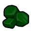
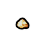
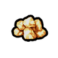
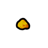
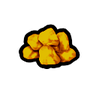

HSK 官方把它归在 Extracted/Metals/PRS(贵重品) 或 Metallic/RARBar 但材质覆盖≤2 的提纯金属——宝石·化石·未加工贵金属·纯铬纯钴纯镍纯钨钒锰钼锌焊锡等,只作收藏/贸易/配方原料与合金添加剂,**不参与能力档阶梯评价**(标 V 级)
原始按消耗它的配方研究档HSK原版上游补丁×3装饰专用级·原始·翡翠Jade
装饰专用级可塑成品 302 件:家具建筑299 · 近战工具2 · 其它1
石材件(墙/桌/祭坛)302
vs 塑料多 233 件(手斧、开放式炉灶…);比钢少 727 件 —— 如 凤凰装甲、美狐士兵头盔… 都选不到它
 生效·aCore_SK
生效·aCore_SK
生效·bCore_SK生效·cCore_SKThings/Item/Resource/Jade StackCount (85,118,69)(85,118,69)被2条配方消耗
护甲 —/—/— 利钝 0.80/1.50 价值 15 质量 0.30 Bulk 0.30
stuff Stony
HSK PRS
产自 —(无产出配方:矿石开采 / 基础掉落 / 商人购买)
源 Core_SK + 游戏本体
Items_Resource_Ore.xml ; Items_Resource_Stuff.xml
原始按消耗它的配方研究档HSK原版本地补丁×1上游补丁×3贵重级·原始·金矿Gold
贵重品·不作材质宝石·收藏(未加工贵重品) —— 建造/打造清单里不会拿它当材质(覆盖 0 件);当前被 5 条配方当原料消耗
① 起点 · Core 的 Defs 写 Things/Item/Ores/Gold

aCore_SK
bCore_SK cCore_SK
cCore_SK② Core_SK_CoreModule 换成 Things/Item/Ores/Gold (255,215,0) ← Items_Resource_Ore.xml

aCore_SK
bCore_SKcCore_SK④ 生效(终态) Things/Item/Ores/Gold ← 10_Vile贴图还原.xml
 aCore_SK
aCore_SK bCore_SKcCore_SK
bCore_SKcCore_SKThings/Item/Ores/Gold StackCount (255,215,0)被5条配方消耗贴图链 4 段
护甲 —/—/— 利钝 —/— 价值 25 质量 0.25 Bulk 0.25
stuff Matty
HSK PRS
产自 Convert to gold ore(核合成转化器/Transformation of matter II)
源 Core_SK + 游戏本体
Items_Resource_Ore.xml ; Items_Resource_Stuff.xml
原始Vile贵重级·原始·纯银（Ag）PureSilver
贵重品·不作材质提纯金属·焊料(合金添加剂) —— 建造/打造清单里不会拿它当材质(覆盖 0 件);当前被 2 条配方当原料消耗
 生效·ACore_SK生效·BCore_SK生效·CCore_SK
生效·ACore_SK生效·BCore_SK生效·CCore_SKThings/Item/Ingot StackCount (222,222,222)被2条配方消耗
护甲 —/—/— 利钝 —/— 价值 3 质量 0.40 Bulk 0.40
stuff —
HSK RARBar
产自 Smelt lead alloy (x25)(铸造厂/Metallurgy I - Bronze Age) ; Smelt lead and silver (15 Pb / 10 Ag)(火坑, 高炉/Metallurgy I - Bronze Age) ; Quick: Galena (15 Pb, 15 Ag)(金属提炼厂/Metal processing II)
源 Vile's Materials Science
Alloys_Intermediate.xml ; Ores_New.xml